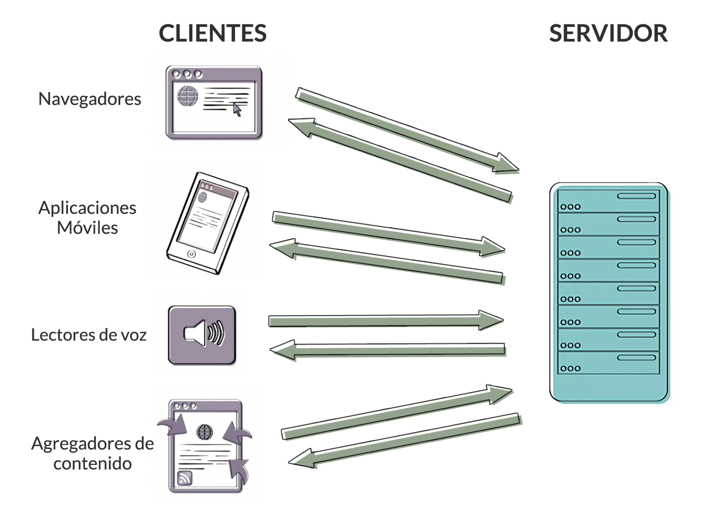
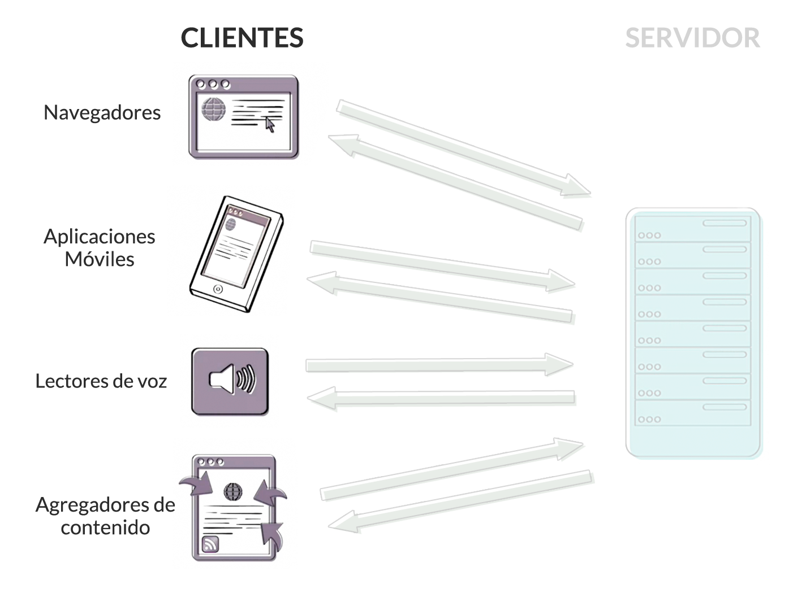

La web puede resumirse como una serie de interacciones entre dos tipos de sistemas: Servidores y Clientes
Los Clientes son los encargados de solicitar y mostrar el contenido web.
Los Servidores son aplicaciones (software) encrgados de enviar contenido a los Clientes cuando este lo solicita.


http://www.baued.es/es/estudios/workshops.html
Las URL son direcciones exclusivas que nos permiten localizar recursos dentro de internet.
Generalmente están compuestas de 3 partes principales:
http://www.baued.es/es/estudios/workshops.html
Los protocolos son lenguajes simples que permiten a diferentes ordenadores compartir información entre sí independientemente de la configuración, sistema operativo o software que utilicen.
http://www.baued.es/es/estudios/workshops.html
Algunos protocolos comúnes en el entorno de internet: FTP, HTTP, SMTP, TCP/IP, UPD.
En concreto, el encargado de transferir datos a través de internet es el protocolo HTTP (HyperText Transfer Protocol)
http://www.baued.es/es/estudios/workshops.html
El nombre del sitio web se compone a su vez de varias partes:
http:// www. baued .es /es/estudios/workshops.html
Es la ruta dentro de la carpeta del dominio al recurso específico que el cliente HTTP está solicitando.
Si no se especifica en la URL, el cliente intentará encontrar el archivo que esté configurado para mostrarse por defecto (normalmente index.html o default.html)
http://www.baued.es/es/estudios/workshops.html
Es el lenguaje que se utiliza para crear la estructura y el contenido de un documento web.
Se trata de un lenguaje de marcado, es decir un sistema para identificar y describir los diferentes elementos de una página
<h1>h1 - Titular de nivel 1 </h1>
<h2>h2 - Titular de nivel 2 </h2>
<p>Esto es un párrafo con un <strong>texto destacado</strong>.</p>
Es un lenguaje creado para controlar la presentación (el estilo) de un documento HTML.
.subtitulo {
color: red;
font-family: 'Comic Sans MS';
font-size: xx-large;
}
Es un lenguaje de programación que se utiliza para agregar interactividad y comportamientos dinámicos a nuestras páginas.
(function(){
var hi_button = document.getElementById('hi-button'),
hi_container = document.getElementById('hi-container');
hi_button.onclick = function() {
hi_container.innerHTML = '<h2 class="hi">Hola</h2>';
}
})();
Son lenguajes que se ejecutan en el servidor. Se utilizan para crear sitios web con contenidos dinámicos y aplicaciones.
Algunos de estos lenguajes son:
Los elementos son la estructura básica de HTML.
Para marcar un elemento solo necesitamos dos etiquetas o tags (escritas entre corchetes angulares: <,>), una de apertura y una de cierre, que se diferencia por llevar una “ / ” tras el primer corchete.
<elemento>Contenido.</elemento>
Extisten también elementos vacíos, o sea, que no llevan contenido por lo que tampoco utilizan etiqueta de cierre
<img>, <br> o <hr> son algunos ejemplos.
Los elementos pueden anidarse unos dentro de otros (con ciertas restricciones).
En ese caso debe cerrarse siempre primero el elemento hijo antes de cerrar el padre
<body>
<h1>Titular del contenido</h1>
<p>Contenido de la página</p>
</body>
Los elementos pueden contener atributos. Los atributos son instrucciones que modifican la forma en que se comporta el elemento.
Los atributos se componen de un nombre y un valor, escritos con la siguiente sintáxis:
<a href="http://www.google.com">Google</a>
Podemos insertar comentarios en nuestro código para hacer anotaciones que consideremos necesarias para entenderlo mejor.
Todo lo que se escriba dentro de un comentario no será leido por el navegador.
<!--
Esto texto no se verá en el navegador
porque es un comentario
-->
<p>Esto texto si se mostrará</p>
<!DOCTYPE html>
<html>
<head>
<meta charset ="utf-8">
<title>Titulo de la página</title>
</head>
<body>
<h1>Titular del contenido</h1>
<p>Contenido de la página</p>
</body>
</html>
El elemento <head> contiene información descriptiva del mismo documento.
Su contenido no se mostrará en la ventana del navegador.
Algunos contenidos del <head> pueden ser:
<head>
<meta charset="utf-8">
<title>Bau, Centro Universitario de Diseño de Barcelona</title>
<meta name="description" content="En Bau te formarás como profesional del
diseño web">
<meta name="keywords" content="bau, bau diseño, bau escuela, escuela bau,
bau universidad, Centro Universitario de Diseño de Barcelona, bau master">
<meta name="viewport" content="width=device-width, initial-scale=1">
<link rel="stylesheet" href="css/styles.css">
<script src="js/modernizr.js"></script>
<link rel="shortcut icon" href="favicon.ico" type="image/x-icon">
</head>
El elemento <body> contiene todo aquello que se mostrará la ventana del navegador.
| Etiqueta | Elemento que representa |
|---|---|
<h1-h6> |
Titulares. Tienen 6 niveles diferentes. |
<p> |
Párrfos de texto. |
<ul> |
Listas dónde el orden de sus elementos no es importante. |
<ol> |
Listas dónde sus elementos tienen un órden determinado. |
<li> |
Elemento de una lista. Siempre tienen que estar dentro de un <ul> o <ol> |
<blockquote> |
Un bloque de texto que contiene un testimonio de otra fuente. |
| Etiqueta | Elemento que representa |
|---|---|
<a> |
Un link. La url a la que apunta se especifica con el atributo href. |
<strong> |
Un texto destacado. Por defecto se renderiza en negrita. |
<em> |
Un texto enfatizado. Por defecto se renderiza en itálica. |
<u> |
Un texto subrayado. |
<mark> |
Un texto resaltado. |
<code> |
Representa trozos de código. |
| Etiqueta | Elemento que representa |
|---|---|
<div> y <span> |
Elementos sin contenido semántico. El primero es inline, mientras que el segundo es block. |
<header> |
Cabecera de un documento o de una sección del documento. Suele contener un elemento <h1...h6> |
<footer> |
Pie de un documento o de una sección del documento. |
<nav> |
Navegación de un documento o página. Contiene enlaces a otros documentos o a secciones del mismo documento. |
<article> |
Sección de un documento cuyo contenido tenga sentido por si mismo independientemente de su contexto. |
<section> |
Un grupo de contenido de temática relacionada. |
<aside> |
Sección de una página con contenido relacionado o complementario al contenido principal. |
Una estructura muy básica de una página podría ser algo así: